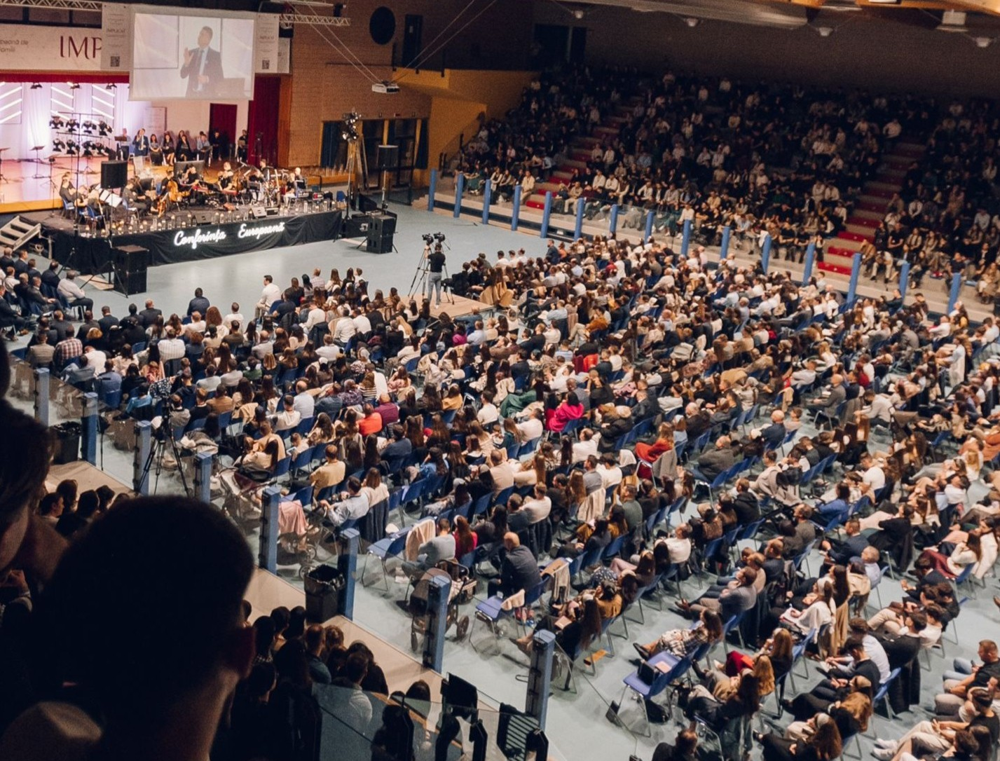

European Youth & Family Conference
Designed and developed the official website of the European Conference, focusing on usability and responsive design.
Visit ProjectDesigned and developed the official website of the European Conference, focusing on usability and responsive design.
Visit ProjectMore projects are on the way…